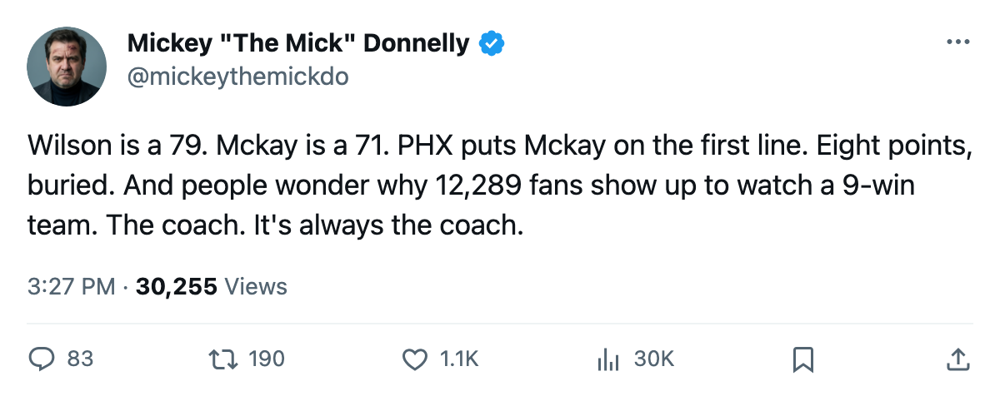
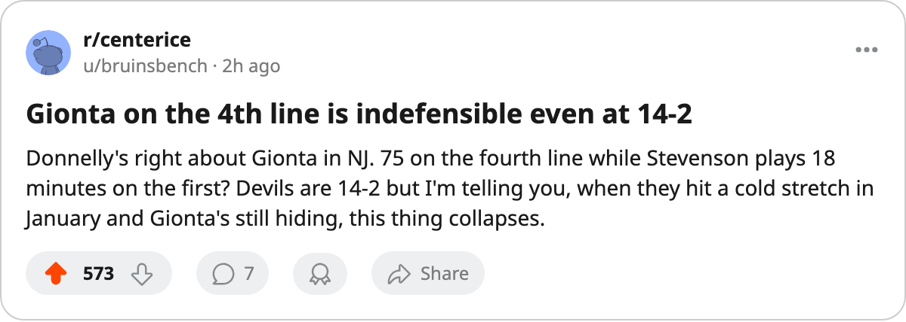

THE COACH SAT WHOM: Five benches, five better men, zero excuses
The grading says who's better. The lineup card says the coach doesn't care. Here are five clubs paying for it.
 Mickey "The Mick" DonnellyColumnist, ex-goalie · The Penalty Box
Mickey "The Mick" DonnellyColumnist, ex-goalie · The Penalty Box
The Book grades players 50 to 99. The lineup cards say who plays where. When those two things disagree, the coach's head should be on a pike. Five benches in this league are hiding better men on worse lines, and the fans are paying to watch it.
Eight points, buried in Phoenix
 Landon Wilson77 carries a 79 overall. Yves Mckay69 carries a 71. The
Landon Wilson77 carries a 79 overall. Yves Mckay69 carries a 71. The  Phoenix Coyotes coach puts Mckay at centre on the first line and parks Wilson on the third, between the hashmarks and the penalty box. That is 8 full points of grading sitting idle while a man rated 71 handles the first-line centre duties. Phoenix Coyotes sits 9-13-4, 24 points, dead last in the Pacific on a 1-game losing streak. You want the answer to why? Read the lineup card.
Phoenix Coyotes coach puts Mckay at centre on the first line and parks Wilson on the third, between the hashmarks and the penalty box. That is 8 full points of grading sitting idle while a man rated 71 handles the first-line centre duties. Phoenix Coyotes sits 9-13-4, 24 points, dead last in the Pacific on a 1-game losing streak. You want the answer to why? Read the lineup card.
Five in a row and a 6-point gap
 Pittsburgh Penguins runs the same play on a tighter margin. Brian Holzinger76 grades 76.
Pittsburgh Penguins runs the same play on a tighter margin. Brian Holzinger76 grades 76.  Kris Beech70 grades 70. Holzinger centres the third line and kills penalties. Beech gets the second-line centre job with the ice time. The Penguins are 7-11-4, down 5 straight. The room sees it. The coach either doesn't see it or doesn't care. Either way, it's his bench.
Kris Beech70 grades 70. Holzinger centres the third line and kills penalties. Beech gets the second-line centre job with the ice time. The Penguins are 7-11-4, down 5 straight. The room sees it. The coach either doesn't see it or doesn't care. Either way, it's his bench.
 Dave Scatchard76 in
Dave Scatchard76 in  New York Islanders is the same crime. 76 for Scatchard, 70 for Justin Papineau70. Scatchard on the third line. Papineau on the second and the fourth. Six points. The Islanders are 12-11-1 and their coach won't move a pawn the Book says is 6 grades above the one he's playing.
New York Islanders is the same crime. 76 for Scatchard, 70 for Justin Papineau70. Scatchard on the third line. Papineau on the second and the fourth. Six points. The Islanders are 12-11-1 and their coach won't move a pawn the Book says is 6 grades above the one he's playing.
The quiet one and the lucky one
 Montreal Canadiens has the softest version of this nonsense.
Montreal Canadiens has the softest version of this nonsense.  Joe Juneau68 grades 68 and centres the third line.
Joe Juneau68 grades 68 and centres the third line.  Mike Ribeiro62 grades 62 and centres the first. Six points, same gap as Long Island, same result: 9-14-1, 21 points, 4th in the Northeast.
Mike Ribeiro62 grades 62 and centres the first. Six points, same gap as Long Island, same result: 9-14-1, 21 points, 4th in the Northeast.
And then  New Jersey Devils.
New Jersey Devils.  Brian Gionta73, a 75, on the fourth line right wing.
Brian Gionta73, a 75, on the fourth line right wing.  Turner Stevenson70, a 72, on the first line right wing. Three points, a smaller gap. Here's the problem: the Devils are 14-2-3, on a 5-game win streak, and they've got a legitimate shot at the Atlantic division crown. That doesn't make the lineup card right. It makes it luck. A coach who gets away with hiding a man for 40 games is a coach who'll still be hiding him when the wins stop. They always stop.
Turner Stevenson70, a 72, on the first line right wing. Three points, a smaller gap. Here's the problem: the Devils are 14-2-3, on a 5-game win streak, and they've got a legitimate shot at the Atlantic division crown. That doesn't make the lineup card right. It makes it luck. A coach who gets away with hiding a man for 40 games is a coach who'll still be hiding him when the wins stop. They always stop.
Do the math on the bench
Here's what I want: when a coach's lineup card contradicts the Book by more than 5 points at the same position, the GM answers for it. Five coaches are doing it right now. The one in Phoenix is doing it by 8, with a 9-win season and 12,289 people in the building paying $80 apiece to watch it.
The coach is always the problem.

